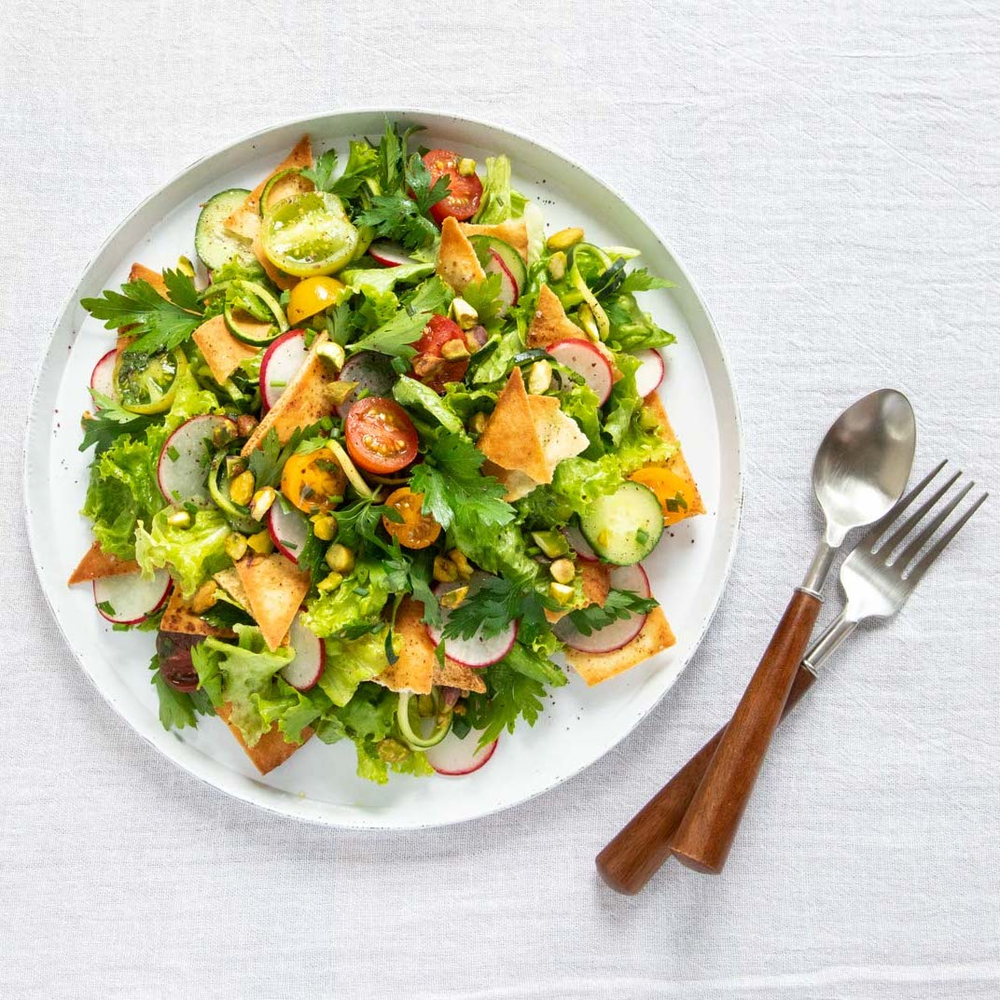

Fattoush
Crispy pita salad with fresh vegetables and sumac dressing.
üçΩÔ∏è Serves
3
⏲️ Preparation Time
15 minutes
üî• Cooking Time
—
ü•£ Ingredients
- 2 pita breads
- 1 cucumber
- 2 tomatoes
- 1/2 red onion
- 1/2 cup parsley
- 1/4 cup mint
- 1 tbsp sumac
- Juice of 1 lemon
- 2 tbsp olive oil
- Salt to taste
üìù Preparation
- Toast pita and break into pieces.
- Mix all veggies and herbs.
- Add dressing and pita. Toss well.